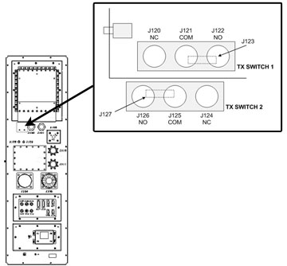

Operating Documentation
Direction 5500113, Rev# 3
Discovery MR750 3.0T Service Methods
Module Version 5.0, Version Date 10/24/08
Operating Documentation |
| Required Persons | Preliminary Reqs | Procedure | Finalization |
|---|---|---|---|
| 1 | Not Applicable | Not Applicable | Not Applicable |
This document contains possible error messages and faults due to the multi-nuclear spectroscopy (MNS) radio frequency (RF) receive and transmit chains.
| NOTE: | Remove the multi-nuclear spectroscopy transmit/receive (MNS T/R) module from the system when the spectroscopy scanning is complete. The presence of the module may cause image quality degradation. |
| Item | Qty | Effectivity | Part# | Manufacturer | |
|---|---|---|---|---|---|
| Digital Multimeter | 1 | - | 46-194427P84 | - | |
Ensure the proper center frequency is being used for either carbon or phosphorous nucleus. Check the switch and determine what type of switch it is (see Table 1).
Table 1: 3.0T MNS Frequency Range
| Nucleus | Minimum Frequency | Maximum Frequency |
| 13C | 32.016 | 32.227 |
| 31P | 51.574 | 51.941 |
Confirm TPS resets without MNS receive errors.
If TPS resets okay, check the connection between J4 and the LPCA. If the connection is working properly, connect the narrow band coil to the A-Port connector and perform a test scan. If the connection is not working properly, fix the connection.
| NOTE: | Alternatively, if there is a MCRv Tool available, perform the Coil Datapath Diagnostics. |
If the test scan passes, inspect the MNS quick disconnect box for damage. Confirm with the customer that the coil is in working order or run the MNS Functional Checks procedure.
If the functional check fails, the MNS T/R Switch has failed or the quick disconnect box is faulty.
If the functional check passes, but there is no signal, ensure that the 8W8 cable assembly from the LPCA is plugged into J4 of the MNS Upconverter
If the test scan fails or the system cannot scan, inspect the A-Port connector, ODU egress connector for damage. Also check the RF Amplifier to the proper RF output power.
If the TPS reset fails, check these connections at the MNS Upconverter and confirm each is in working order:
Upconverter J5 to re-route box J8
Upconverter J2 to RF control board J11
Upconverter J1 to SPW J33
SPW J33 to MNS Exciter J2
SPW J31 to MNS Exciter J1
If the connections are working properly, check the operation of the MNS Upconverter. If the connections are faulty, fix the connection that needs repair.
At the PEN wall, check all the cabling coming from the PHPS2. In particular check the quality of the contacts and shielding.
Check the in-line filters (if any) and toroids (if any)
Check that the magnet pressure transducer is properly shielded.
Confirm that the SRI-4 firmware is at the latest revision. Check the SRI-4 cabling for good contact and shielding.
Scope the amplifier by connecting the transmit line to the 3.0T RF Power Measurement Kit to detect the RF power (see Illustration 1).
Illustration 1: MNS Output Test Setup

If it is a TR Bias issue, there is a switch arrangement on the Second Penetration Panel (SPW) (see Illustration 2). Ensure that the switches are properly connected. Use a multimeter in the diode drop mode (1.5V one direction, 0.4V in the other direction) to ensure that each switch is properly connected.
Illustration 2: SPW Transmit Switch Locations

Ensure that the T/R bias path is complete form the bias driver module in the PEN cabinet to the T/R switch on the LPCA cover.
Ensure that the amplitude of the RF transmit pulse at the input of the RF amplifier by disconnecting the cable at the RF IN port on the amplifier and connecting it to the 50 Ohm DC input of an oscilloscope, with a DC block.
Run a test scan. The amplitude of the square pulse should be >0.2 V peak-to-peak at a TG setting of 200.
Attach the dummy load to the RF output.
If the problem is corrected, check the transmit chain connection and other components (T/R switch, coil).
Check connections to RF amplifier. Refer to System Block Diagrams.
Systematically swap the circuit boards inside the ASC chassis nothing if the error follows one particular board.
Swap the connections from the amplifier to the boards in the ASC to see if this indicates a problem coming from the amplifier.
If there is an issue coming from one particular component (UPM RF detector boards, UPM processor boards, RF amplifier, 50 ohm terminators), investigate the issue to ensure that component is working properly with the system.
The 50 ohm terminators may not be connected. Check that the 50 ohm loads (BNC male snap-on) are applied to J1, J2, J3, and J6 on UPM RF detector boards 19U and 19L. Ensure UPM cables are connected to J4 and J5 on UPM RF detector boards 19U and 19L.
If the connections are okay, ensure the UPM RF detector boards and 50 ohm terminators are working properly.
Perform a test scan to ensure the system is functioning correctly.